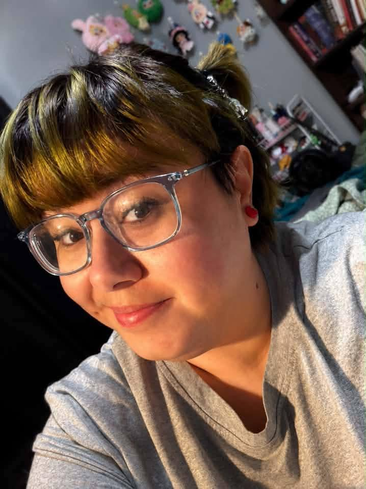

Milo
Nakamura
Milo brings an interdisciplinary background in resilient communities, nonprofit work, community systems, research, and writing to literary representation.
Her approach is analytical without losing sight of the thing that matters most: the story. She is interested in distinctive voices, ambitious ideas, and authors looking for a thoughtful advocate for both the manuscript in front of them and the career beyond it.
A systems thinker in a story business.
Milo holds a Master’s degree in Resilient and Sustainable Communities , with a background centered on nonprofit and community systems. Her academic and professional work developed a perspective grounded in research, complex systems, communication, and the relationship between people and the structures around them.
She has also pursued doctoral-level study and is an author herself, bringing firsthand familiarity with the creative side of writing alongside the strategic thinking required to evaluate, position, and advocate for a project.
Good representation should understand the book, the person who wrote it, and the larger career both are trying to build.
Master’s Degree
Resilient and Sustainable Communities, with interdisciplinary study focused on communities, systems, resilience, and sustainable development.
Doctoral-Level Academic Experience
Previous doctoral study adds experience with advanced research, analysis, synthesis, and long-form academic work.
Nonprofit & Community Systems
A professional background in nonprofit and community-focused systems informs a people-centered, strategic approach to advocacy and long-term planning.
Author
Milo has authored books and brings an author’s understanding of drafting, revision, creative intent, and the vulnerability involved in putting a manuscript into someone else’s hands.
Stories that leave fingerprints.
Milo gravitates toward manuscripts with a strong identity. She is less interested in work that merely resembles what is already successful than in books that understand their audience while bringing something unmistakably their own.
Distinctive writing
Confident narrative voices and prose with enough personality that the book could not have been written by just anyone.
Ambitious ideas
High-concept premises, unconventional approaches to familiar genres, and ideas with genuine thematic or philosophical substance.
Human stakes
Character-driven work where the emotional consequences matter as much as the mechanics of the plot.
Thoughtful. Candid. Long-term.
Milo’s representation philosophy emphasizes clear communication, honest feedback, careful positioning, and an understanding of an author’s goals beyond a single transaction.
She intends to maintain a selective list so that representation means active advocacy rather than simply adding another name to a roster.
Think Milo may be the right agent?
Review Three Gremlins Literary Agency’s current submission guidelines, manuscript interests, and query requirements before submitting.